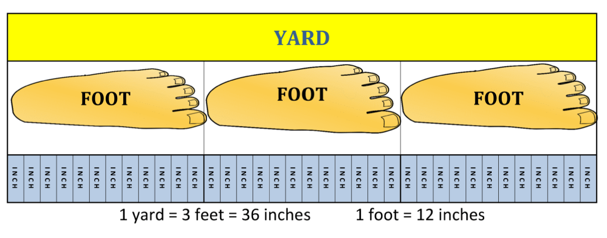

Length Conversion Table of Common Length Units
| millimeter (mm) | centimeter (cm) | meter (m) | kilometer (km) | inch (in) | foot / feet (ft) | yard (yd) | mile (mi) | nautical mile (nmi) | |
| 1 millimeter (mm) | 1 | 0.1 | 0.001 | 0.000001 | 0.039370078740157 | 0.0032808398950131 | 0.0010936132983377 | 0.00000062137119223733 | 0.00000053995680345572 |
| 1 centimeter (cm) | 10 | 1 | 0.01 | 0.00001 | 0.39370078740157 | 0.032808398950131 | 0.010936132983377 | 0.0000062137119223733 | 0.0000053995680345572 |
| 1 meter (m) | 1000 | 100 | 1 | 0.001 | 39.370078740157 | 3.2808398950131 | 1.0936132983377 | 0.00062137119223733 | 0.00053995680345572 |
| 1 kilometer (km) | 1000000 | 100000 | 1000 | 1 | 39370.078740157 | 3280.8398950131 | 1093.6132983377 | 0.62137119223733 | 0.53995680345572 |
| 1 inch (in) | 25.4 | 2.54 | 0.0254 | 0.0000254 | 1 | 0.083333333333333 | 0.027777777777778 | 0.000015782828282828 | 0.000013714902807775 |
| 1 foot / feet (ft) | 304.8 | 30.48 | 0.3048 | 0.0003048 | 12 | 1 | 0.33333333333333 | 0.00018939393939394 | 0.0001645788336933 |
| 1 yard (yd) | 914.4 | 91.44 | 0.9144 | 0.0009144 | 36 | 3 | 1 | 0.00056818181818182 | 0.00049373650107991 |
| 1 mile (mi) | 1609344 | 160934.4 | 1609.344 | 1.609344 | 63360 | 5280 | 1760 | 1 | 0.86897624190065 |
| 1 nautical mile (nmi) | 1852000 | 185200 | 1852 | 1.852 | 72913.385826772 | 6076.1154855643 | 2025.3718285214 | 1.1507794480235 | 1 |

test